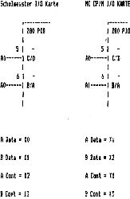

80-Bus Journal |
Jan/Feb/März 1984 · Ausgabe 1 |
Der Ausdruck wurde auf einem MX 80FT mit U-80-HR 3+ Nachrüstmodul von Unitronic, gemacht. (Ass. Listing liegt bei).
Dabei wurde im Einzelpunkt-Modus mit 2 Nadeln jeweils 2x gedruckt. Dadurch entstand pro Punkt eine 2x2 Matrix. Jede Zeile wurde viermal gedruckt um mehr Kontrast zu erhalten.
Dazu noch ein kleiner Trick: Der Drucker erlaubt für eine Zeile 480 Punkte, für diese Bildbreite waren aber 256x2, also 512 Punkte erforderlich. Dazu habe ich 256 Punkte eingegeben, danach ein BS, dadurch wird gedruckt und der Druckerbuffer geleert, danach die restlichen 256 Punkte und CR (0DH) bzw. nach viermaligen) Druck der gleichen Zeile LF (0AH).
Das müsste auch bei neueren Druckern der Epson-Familie und evtl. anderen Druckern die ein BS erlauben funktionieren.
Mit diesem Problem hat sich Herr Schulmeister in Heft 12/83 herumgeschlagen.
Herrn Schulmeisters Vermutung, im MC Programm sind Fehler, stimmt also nicht. Es kommt nur darauf an, an welchem Pin die Adressleitungen A0 und A1 jeweils angeschlossen sind.
Wolfgang Klemm
Düsseldorf

| Seite 35 von 52 |
|---|